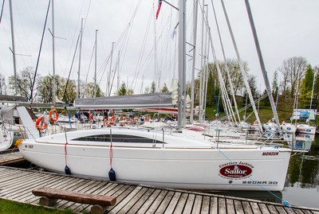
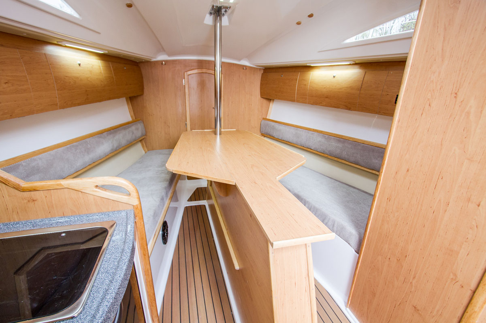

Sedna30
Sedna30

Opis:
Sedna 30 – jest jachtem przeznaczonym do szybkiego żeglowania, dla aktywnych i ambitnych żeglarzy-amatorów o sportowym zacięciu. Nautycznie jednostce nie można nic zarzucić, jest prosta w obsłudze i precyzyjna w sterowaniu. Nasza Sedna 30 posiadającym 3 zamykane kabiny, umożliwiające komfortowe użytkowanie wnętrza załodze liczącej nawet 10 osób.
Sedna 30 – jest jachtem przeznaczonym do szybkiego żeglowania, dla aktywnych i ambitnych żeglarzy-amatorów o sportowym zacięciu. Nautycznie jednostce nie można nic zarzucić, jest prosta w obsłudze i precyzyjna w sterowaniu. Nasza Sedna 30 posiadającym 3 zamykane kabiny, umożliwiające komfortowe użytkowanie wnętrza załodze liczącej nawet 10 osób.
Zdjęcie Pokładu

Dane techniczne:
Długość całkowita: 9.0
Szerokość: 3.0 m
Zanurzenie min/max: 0,45 / 2
Liczba koi: 9
Liczba kabin: 3
Wysokość w kabinie: 1.9 m
Wysokość masztu: 11.0 m
Powierzchnia żagli: 42.7 m2
Grot / fok: 26.0 / 16.7
Silnik : 8 KM
Długość całkowita: 9.0
Szerokość: 3.0 m
Zanurzenie min/max: 0,45 / 2
Liczba koi: 9
Liczba kabin: 3
Wysokość w kabinie: 1.9 m
Wysokość masztu: 11.0 m
Powierzchnia żagli: 42.7 m2
Grot / fok: 26.0 / 16.7
Silnik : 8 KM
Żagiel

Wypożyczalnia jachtów! © Wszelkie prawa zastrzeżone